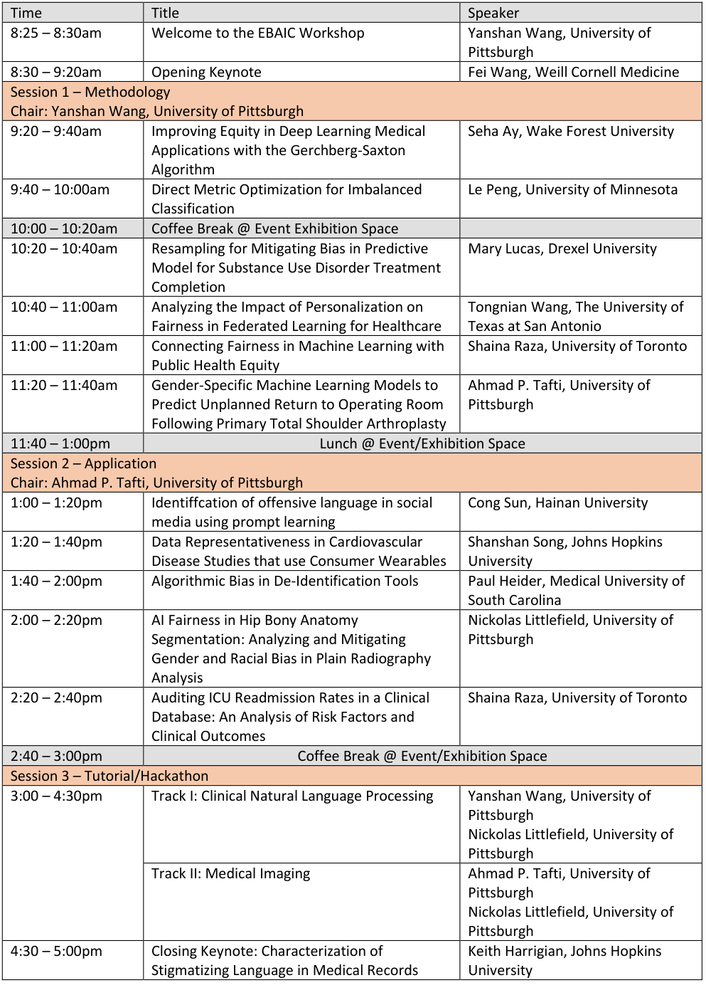

EBAIC 2023
at ICHI 2023
June 26th, 2023, Houston, Texas
Click here and get our flyer!
Agenda

Opening Keynote
Fei Wang, PhD
Associate Professor of Health Informatics.
Department of Population Health Sciences.
Director. Institute of AI in Digital Health.
Weill Cornell Medicine. Cornell University.
Talk Title: Towards Building Trustworthy Machine Learning Models in Medicine: Accuracy, Fairness, Explainability, and All That
Abstract: Machine learning (ML) is playing a more and more important role in medicine. One of the main reasons that ML models caught lots of attention is their superior quantitative performance. Recent research and practice pointed out that we also need to consider other aspects, such as model fairness and explainability. There exist tradeoffs among those different indices, so it is challenging to achieve all of them simultaneously. In this presentation, I will discuss the relationships among these different indices, introduce some of our work on joint optimization of multiple of them, and talk about future directions.
Bio: Fei Wang is an Associate Professor in Division of Health Informatics, Department of Population Health Sciences, Weill Cornell Medicine (WCM), Cornell University. He is also the founding director of the WCM institute of AI for Digital Health (AIDH). His major research interest is AI and digital health. He has published more than 300 papers on the top venues of related areas such as ICML, KDD, NIPS, CVPR, AAAI, IJCAI, Nature Medicine, JAMA Internal Medicine, Annals of Internal Medicine, Lancet Digital Health, etc. His papers have received over 24,000 citations so far with an H-index 76. His (or his students’) papers have won 8 best paper (or nomination) awards at top international conferences on data mining and medical informatics. His team won the championship of the AACC PTHrP result prediction challenge in 2022, NIPS/Kaggle Challenge on Classification of Clinically Actionable Genetic Mutations in 2017 and Parkinson's Progression Markers' Initiative data challenge organized by Michael J. Fox Foundation in 2016. Dr. Wang is the recipient of the NSF CAREER Award in 2018, as well as the inaugural research leadership award in IEEE International Conference on Health Informatics (ICHI) 2019. Dr. Wang also received prestigious industry awards such as the Sanofi iDEA Award (2021), Google Faculty Research Award (2020) and Amazon AWS Machine Learning for Research Award (2017, 2019 and 2022). Dr. Wang’s Research has been supported by a diverse set of agencies including NSF, NIH, ONR, PCORI, MJFF, AHA, etc. Dr. Wang is the past chair of the Knowledge Discovery and Data Mining working group in American Medical Informatics Association (AMIA). Dr. Wang is a fellow of AMIA, a fellow of IAHSI, a fellow of ACMI and a distinguished member.
Closing Keynote
Characterization of Stigmatizing Language in Medical Records
Abstract: Widespread disparities in clinical outcomes exist between different demographic groups in the United States. A new line of work in medical sociology has demonstrated physicians often use stigmatizing language in electronic medical records within certain groups, such as black patients, which may exacerbate disparities. In this study, we characterize these instances at scale using a series of domain-informed NLP techniques. We highlight important differences between this task and analogous bias-related tasks studied within the NLP community (e.g., classifying microaggressions). Our study establishes a foundation for NLP researchers to contribute timely insights to a problem domain brought to the forefront by recent legislation regarding clinical documentation transparency. We release data, code, and models.
Bio: Keith Harrigian is a 4th year PhD Student in Computer Science at Johns Hopkins University. With his advisor Mark Dredze, Keith researches computational and statistical methods for modeling natural language. He is particularly interested in developing robust and stable machine learning models for application in the healthcare domain. Prior to joining Johns Hopkins, Keith was a Senior Quantitative Analyst at Warner Media where he leveraged machine learning and natural language processing to mine social media data for applications to film and television marketing. He holds a M.S.E in Computer Science from Johns Hopkins University and a B.S. in Mathematics with minors in Physics and Music from Northeastern University. He is currently on leave from JHU, working as a machine learning intern at Netflix.
Call for Papers / Participation
The volume of Electronic Health Record (EHR) data has grown dramatically in the past decade due to the wide adoption of EHR systems in healthcare systems. The availability of large amounts of multimodal clinical data has fostered the application of Artificial Intelligence (AI) in clinical care including in clinical decision support, patient management, as well as in clinical and translational research, such as digital phenotyping, cohort discovery, and in-silico trials. Despite the promising potential of AI in clinical applications, its regular use comes with bias and ethical challenges. As highlighted by recent studies, disparities in health care, although may start at the collection of clinical data, could be amplified with the development of AI technologies.
Topics of interest
Any original research related to ethics and bias of AI in clinical applications. The relevant AI techniques include, but are not limited to, natural language processing, medical imaging, deep learning, predictive modeling, human computer interface, Internet of Things, and more. Clinical applications include, but are not limited to, clinical decision support, clinical research, translational research, consumer applications, robotics.
Other relevant topics include: AI for health equity, AI for health disparity, transparency/interpretability/explainability of AI techniques in clinical applications, data bias, algorithmic bias, human bias of AI techniques, fairness metrics, fairness evaluation, fairness tools, reasoning, practical and technical solutions to mitigate the bias, and more.
Finally, we will consider limited types of position papers on AI ethics/bias. This would include position papers from individuals/groups that are part of a community that has historically been adversely impacted by artificial intelligence, bias, or health disparities. We will also consider position papers from institutions playing key roles in mitigating the impact of bias in clinical applications.
Program-at-a-Glance
Scientific Session
- Keynote Talk
- Fei Wang, PhD, FACMI, FAMIA, FIAHSI, ACM Distinguished Member.
Associate Professor of Health Informatics, Weill Cornell Medicine. Founding Director. WCM Institute of AI for Digital Health.
- Fei Wang, PhD, FACMI, FAMIA, FIAHSI, ACM Distinguished Member.
- Oral Presentations & Posters
- Submission Types:
- Regular Papers: 10 pages with up to 2 extra pages for references/appendices.
- Will describe mature ideas, where a substantial amount of implementation, experimentation, or data collection and analysis has been completed.
- Short Papers: 6 pages with up to 1 extra page for references/appendices.
- Will describe innovative ideas, where preliminary implementation and validation work have been conducted.
- Poster Submissions: 2 pages with up to 1 extra page for references/appendices.
- Will present innovative ideas, late-breaking work, concepts, work-in-progress, early stages of research, and preliminary results from implementation and validations to academic and industrial audience.
- Position Papers: 4 pages with up to 2 extra pages for references/appendices.
- Will present an arguable opinion about AI ethics/bias and its impact.
- Regular Papers: 10 pages with up to 2 extra pages for references/appendices.
- Submission Types:
Tutorial/Hackathon Session
The purpose of the tutorial/hackathon session is to raise awareness of the problem of bias in clinical data and AI algorithms with the ultimate goal of creating innovative approaches that can help reduce or eliminate bias in clinical data and AI. Participants may be students, researchers, and data scientists who are interested in applying AI to clinical applications. Complete this form to register the Tutorial/Hackathon Session.
- Track I: Clinical Natural Language Processing
- Data: de-identified clinical notes from MIMIC III
- Algorithm: Rule-based NLP algorithm
- Task: Understand how stigmatizing language in clinical notes varies by patients' medical condition and race/ethnicity
- Pre-requisite: Complete required training and sign the data use agreement for the MIMIC III data access at https://physionet.org/content/mimiciii/1.4/
- Codebase: https://github.com/pitthexai/ICHI2023_EBAIC
- Track II: Medical Imaging
- Data: Knee X-ray images from NIH OAI publicly available dataset
- Algorithm: Convolutional Neural Networks
- Task: Understand how knee joint segmentation and measurement varies by different racial or gender groups, and imbalanced training data
- Codebase and dataset: https://github.com/pitthexai/ICHI2023_EBAIC
Submission and Review
Anyone who is interested in ethics and bias of AI in clinical applications is invited to submit their work to the EBAIC 2023.
Authors can log in at https://easychair.org/conferences/?conf=ieeeichi2023 and submit their papers under the "ebaic" track. All submitted papers will be peer-reviewed by domain experts.
Accepted papers will also be invited to publish an extended version in the Journal of Healthcare Informatics Research with an accelerated peer-review process and a free of charge for publication (except Open Access).
More Information
For more information regarding paper template and review process, please visit https://ieeeichi.github.io/ICHI2023/call_for_papers.html.
All submissions will be published in IEEE Xplore and indexed in other Abstracting and Indexing (A&I) databases. Accepted papers have an oral presentation slot at the conference.
Organizers
Co-Chairs
- Yanshan Wang, PhD, University of Pittsburgh, Pittsburgh, PA, USA
- Hongfang Liu, PhD, Mayo Clinic, Rochester, MN, USA
- Ahmad P. Tafti, PhD, University of Pittsburgh, Pittsburgh, PA, USA
- Kirk Roberts, PhD, The University of Texas Health Science Center at Houston, USA
Technology Chair
- David Oniani, University of Pittsburgh, Pittsburgh, PA, USA
Publication Chair
- Sonish Sivarajkumar, University of Pittsburgh, Pittsburgh, PA, USA
Steering Committee
- Rema Padman, PhD, Carnegie Mellon University, USA
- Fei Wang, PhD, Weill Cornell Medicine, USA
- Vikas Singh, PhD, University of Wisconsin-Madison, USA
- Hossein Estiri, PhD, Harvard Medical School, USA
Important Dates
- Deadline for all submissions: March 31st, 2023
- Notification of decisions: April 11th, 2023
- Camera-ready due: April 21st, 2023
- Workshop date: June 26th, 2023